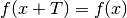
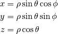
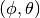
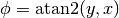
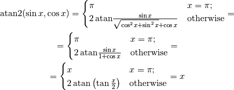

Periodic Functions¶
A function  is periodic with period
is periodic with period  :
:

Then you can shift the integration limits by the period :
If you integrate from  to , you can shift
to , you can shift  in by any
constant
in by any
constant  :
:
Polar Coordinates¶
Polar coordinates (radial, azimuth)  are defined by
are defined by

Example¶
When evaluating integrals of the type:
we write and  using polar coordinates:
using polar coordinates:
and then use the  periodicity of :
periodicity of :
comparing to:
we can see that because the integral is symmetric, we can just set  and
then replace . The above method does everything algebraically, but
you can use this symmetry argument to remember what to do, or even skip the
calculation if you are sure that you didn’t make a mistake in the “symmetry
argument”.
and
then replace . The above method does everything algebraically, but
you can use this symmetry argument to remember what to do, or even skip the
calculation if you are sure that you didn’t make a mistake in the “symmetry
argument”.
Spherical Coordinates¶
Spherical coordinates radial ( ), zenith (
), zenith ( ), azimuth (
), azimuth ( ):
):
(1)
Note: this meaning of is mostly used in the USA and in many books. In Europe people usually use different symbols, like , and others.
The motivation is to first write and using polar coordinates:
and then write  and the projection of onto the plane
using polar coordinates:
and the projection of onto the plane
using polar coordinates:
so by combining these two we get:
Example I¶
To transform differential operators such as into spherical coordinates, we make use of the chain rule:
where  , and are functions of , , to be expressed
by inverting (1):
, and are functions of , , to be expressed
by inverting (1):
At the end, the derivatives are expressed using , ,
again. For example
Finally we obtain
(2)![\frac{\partial}{\partial x}=
\sin\theta\cos\phi
\frac{\partial}{\partial\rho}
+\frac{\cos\theta\cos\phi}{\rho}
\frac{\partial}{\partial \theta}
- \frac{\sin\phi}{\rho\sin\theta}
\frac{\partial}{\partial \phi}
\frac{\partial}{\partial y}=
\sin\theta\sin\phi
\frac{\partial}{\partial\rho}
+\frac{\cos\theta\sin\phi}{\rho}
\frac{\partial}{\partial \theta}
+ \frac{\cos\phi}{\rho\sin\theta}
\frac{\partial}{\partial \phi}
\frac{\partial}{\partial z}=
\cos\theta \frac{\partial}{\partial\rho}
-\frac{\sin\theta}{\rho}
\frac{\partial}{\partial \theta}](../../_images/math/673bd71d86998668d3bb211b0ba912055dfa2568.png)
These expressions can be combined to obtain more complicated objects such as Laplacian (in spherical coordinates). However straightforward this approach is, it is also rather cumbersome; an alternative is discussed in the Spherical Coordinates section of differential geometry (where it is shown, that the coefficients in (2) are simply the matrix elements of the inverse Jacobian).
Example II¶
When evaluating integrals of the type:
we write and using polar coordinates:

and simplify:
![l(x, y, z) = \int_0^\pi\d\theta \int_0^{2\pi} \d\phi
\sqrt{(x-r\sin\theta\cos\phi)^2
+ (y-r\sin\theta\sin\phi)^2
+ (z-r\cos\theta)^2
} \,\sin\theta =
= \int_0^\pi\d\theta \int_0^{2\pi} \d\phi
\sqrt{x^2 + y^2 + z^2 + r^2 -2r(
x\sin\theta\cos\phi
+y\sin\theta\sin\phi
+z\cos\theta
)
} \,\sin\theta =
= \int_0^\pi\d\theta \int_0^{2\pi} \d\phi
\sqrt{\rho_{xy} + z^2 + r^2 -2r(
\rho_{xy}\cos\phi'\sin\theta\cos\phi
+\rho_{xy}\sin\phi'\sin\theta\sin\phi
+z\cos\theta
)
} \,\sin\theta =
= \int_0^\pi\d\theta \int_0^{2\pi} \d\phi
\sqrt{\rho_{xy} + z^2 + r^2 -2r(
\rho_{xy}\cos(\phi-\phi')\sin\theta
+z\cos\theta
)
} \,\sin\theta =
= \int_0^\pi\d\theta \int_0^{2\pi} \d\phi
\sqrt{\rho_{xy} + z^2 + r^2 -2r(
\rho_{xy}\cos\phi\sin\theta
+z\cos\theta
)
} \,\sin\theta](../../_images/math/65c9475ae04a7e14b1803d23db2b2a12dc7d8992.png)
comparing to:
we can see that because the integral is symmetric, we can just set ,
 and then replace .
and then replace .
Argument function, atan2¶
Argument function is any such that
Obviously is unique up to any integer multiple of . By taking
the principal value of the function, e.g. fixing to the
interval (so that the branch cut is on the negative -axis, as
usual), we get the function:
then , where . We can then
use the following formula to easily calculate for any (except
, i.e.  , where it is not defined):
, where it is not defined):
Finally we define as:
The angle  is the angle of the point on the unit circle (assuming the usual conventions), and it works for all quadrants ( only works for the first and fourth quadrant, where , but in the second and third qudrant, gives the wrong angles, while gives the correct angles). So in particular:
This convention () is used for example in Python, C or Fortran.
Some people might interchange with in the definition (i.e. ), but it is not very common.
The following useful relations hold:
We now prove them. The following works for all except for :
![\sin\atan2(y, x)
=\begin{cases}\sin\pi&y=0;x<0;\cr
\sin\left(2\,\atan{y\over\sqrt{x^2+y^2}+x}\right)
&\rm otherwise\cr\end{cases}
=
=\begin{cases}0&y=0;x<0;\cr
{y\over \sqrt{x^2+y^2}}&\rm otherwise\cr\end{cases}
=
=\begin{cases}{y\over \sqrt{x^2+y^2}}&y=0;x<0;\cr
{y\over \sqrt{x^2+y^2}}&\rm otherwise\cr\end{cases}
={y\over \sqrt{x^2+y^2}}
\cos\atan2(y, x)
=\begin{cases}\cos\pi&y=0;x<0;\cr
\cos\left(2\,\atan{y\over\sqrt{x^2+y^2}+x}\right)
&\rm otherwise\cr\end{cases}
=
=\begin{cases}-1&y=0;x<0;\cr
{x\over \sqrt{x^2+y^2}}&\rm otherwise\cr\end{cases}
=
=\begin{cases}{x\over \sqrt{x^2+y^2}}&y=0;x<0;\cr
{x\over \sqrt{x^2+y^2}}&\rm otherwise\cr\end{cases}
={x\over \sqrt{x^2+y^2}}](../../_images/math/708dc04823619641f1026d08832b162bad459691.png)
Tangent is infinite for , which corresponds to , so the
following works for all  :
:
Finally:

In the above, we used the following double angle formulas:
to simplify the following expressions:
![\sin\left(2\,\atan{y\over\sqrt{x^2+y^2}+x}\right) =
{2\tan\atan{y\over\sqrt{x^2+y^2}+x}\over1+\tan^2\atan{y\over\sqrt{x^2+y^2}+x}}
=
=
{2{y\over\sqrt{x^2+y^2}+x}\over1
+\left({y\over\sqrt{x^2+y^2}+x}\right)^2}
=
{2y\left(\sqrt{x^2+y^2}+x\right)\over
\left(\sqrt{x^2+y^2}+x\right)^2+y^2}
=
=
{y\left(\sqrt{x^2+y^2}+x\right)\over
x^2+y^2+x\sqrt{x^2+y^2}}
=
{y\left(\sqrt{x^2+y^2}+x\right)\over
\sqrt{x^2+y^2}\left(\sqrt{x^2+y^2}+x\right)}
=
=
{y\over\sqrt{x^2+y^2}}
\cos\left(2\,\atan{y\over\sqrt{x^2+y^2}+x}\right) =
{1-\tan^2\atan{y\over\sqrt{x^2+y^2}+x}\over1+\tan^2\atan{y\over\sqrt{x^2+y^2}+x}}
=
=
{1 -\left({y\over\sqrt{x^2+y^2}+x}\right)^2\over
1 +\left({y\over\sqrt{x^2+y^2}+x}\right)^2}
=
{\left(\sqrt{x^2+y^2}+x\right)^2-y^2\over
\left(\sqrt{x^2+y^2}+x\right)^2+y^2}
=
=
{x\left(\sqrt{x^2+y^2}+x\right)\over
x^2+y^2+x\sqrt{x^2+y^2}}
=
{x\left(\sqrt{x^2+y^2}+x\right)\over
\sqrt{x^2+y^2}\left(\sqrt{x^2+y^2}+x\right)}
=
=
{x\over\sqrt{x^2+y^2}}
\tan\left(2\,\atan{y\over\sqrt{x^2+y^2}+x}\right) =
{2\tan\atan{y\over\sqrt{x^2+y^2}+x}\over1-\tan^2\atan{y\over\sqrt{x^2+y^2}+x}}
=
=
{2{y\over\sqrt{x^2+y^2}+x}\over1
-\left({y\over\sqrt{x^2+y^2}+x}\right)^2}
=
{2y\left(\sqrt{x^2+y^2}+x\right)\over
\left(\sqrt{x^2+y^2}+x\right)^2-y^2}
=
=
{y\left(\sqrt{x^2+y^2}+x\right)\over
x\left(\sqrt{x^2+y^2}+x\right)}
= {y\over x}](../../_images/math/58f593e12cc1ff077f482fd844e71589f891d1b0.png)
Finally, for all we get:
An example of an application:
where
Another application
Multiple Argument Formulas¶
sin(a x)¶
Systematic way to derive all multiple argument formulas is to use the following relation:
where  are the Chebyshev polynomials of the second kind, first few are:
are the Chebyshev polynomials of the second kind, first few are:
Code:
>>> from sympy import chebyshevu, var
>>> var("x")
>>> for i in range(7): print "U_%d(x) = %s" % (i, chebyshevu(i, x))
U_0(x) = 1
U_1(x) = 2*x
U_2(x) = -1 + 4*x**2
U_3(x) = -4*x + 8*x**3
U_4(x) = 1 - 12*x**2 + 16*x**4
U_5(x) = 6*x - 32*x**3 + 32*x**5
U_6(x) = -1 + 24*x**2 - 80*x**4 + 64*x**6
One can then use this to calculate:
![\sin (-2x) = U_{-3}(\cos x) \sin x = -2\cos x\sin x
\sin (-x) = U_{-2}(\cos x) \sin x = -\sin x
\sin 0 = U_{-1}(\cos x) \sin x = 0
\sin {x\over 2} = U_{-{1\over2}}(\cos x) \sin x =
{\sin x\over\sqrt 2\sqrt{\cos x + 1}} =
{\sqrt{1-\cos^2x}\over\sqrt 2\sqrt{\cos x + 1}} =
{\sqrt{1-\cos x}\over\sqrt 2}
\sin x = U_0(\cos x) \sin x = \sin x
\sin {3x\over 2} = U_{1\over2}(\cos x) \sin x =
{(2\cos x+1)\sin x\over\sqrt 2\sqrt{\cos x + 1}} =
{(2\cos x+1)\sqrt{1-\cos^2x}\over\sqrt 2\sqrt{\cos x + 1}} =
{(2\cos x+1)\sqrt{1-\cos x}\over\sqrt 2}
\sin 2x = U_1(\cos x) \sin x = 2\cos x\sin x
\sin 3x = U_2(\cos x) \sin x = (4\cos^2 x-1)\sin x](../../_images/math/88577ff606fe56a8a10403507303a5fc7d1a706d.png)
Code:
>>> from sympy import chebyshevu, var, sin, cos
>>> var("x")
>>> for n in range(1, 7): print "sin(%d*x) = %s" % (n, chebyshevu(n-1, cos(x))*sin(x))
sin(1*x) = sin(x)
sin(2*x) = 2*cos(x)*sin(x)
sin(3*x) = -(1 - 4*cos(x)**2)*sin(x)
sin(4*x) = (-4*cos(x) + 8*cos(x)**3)*sin(x)
sin(5*x) = (1 - 12*cos(x)**2 + 16*cos(x)**4)*sin(x)
sin(6*x) = (6*cos(x) - 32*cos(x)**3 + 32*cos(x)**5)*sin(x)
cos(a x)¶
Similarly as above, we use:
where are the Chebyshev polynomials of the first kind, first few are:
Code:
>>> from sympy import chebyshevt, var
>>> var("x")
>>> for i in range(7): print "T_%d(x) = %s" % (i, chebyshevt(i, x))
T_0(x) = 1
T_1(x) = x
T_2(x) = -1 + 2*x**2
T_3(x) = -3*x + 4*x**3
T_4(x) = 1 - 8*x**2 + 8*x**4
T_5(x) = 5*x - 20*x**3 + 16*x**5
T_6(x) = -1 + 18*x**2 - 48*x**4 + 32*x**6
One can then use this to calculate:
Code:
>>> from sympy import chebyshevt, var, cos
>>> var("x")
>>> for n in range(7): print "cos(%d*x) = %s" % (n, chebyshevt(n, cos(x)))
cos(0*x) = 1
cos(1*x) = cos(x)
cos(2*x) = -1 + 2*cos(x)**2
cos(3*x) = -3*cos(x) + 4*cos(x)**3
cos(4*x) = 1 - 8*cos(x)**2 + 8*cos(x)**4
cos(5*x) = 5*cos(x) - 20*cos(x)**3 + 16*cos(x)**5
cos(6*x) = -1 + 18*cos(x)**2 - 48*cos(x)**4 + 32*cos(x)**6